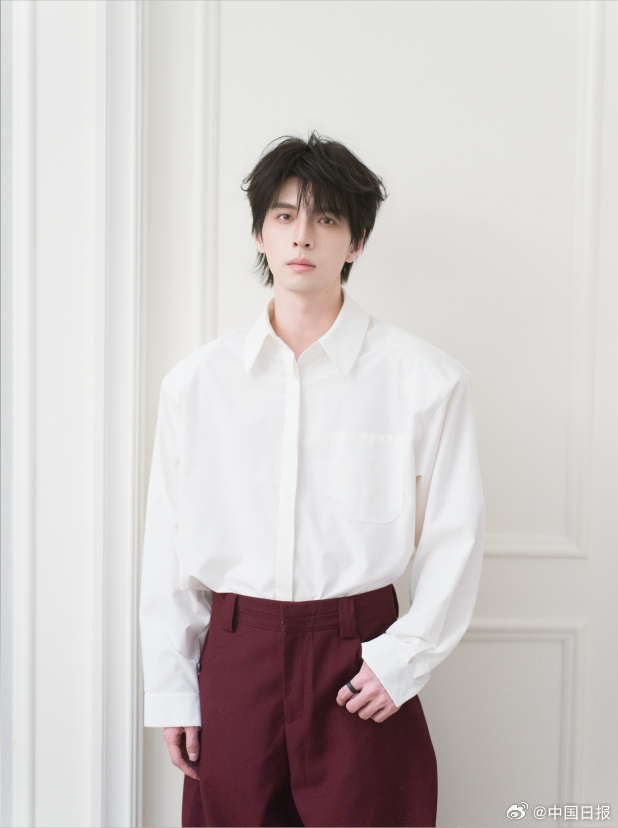
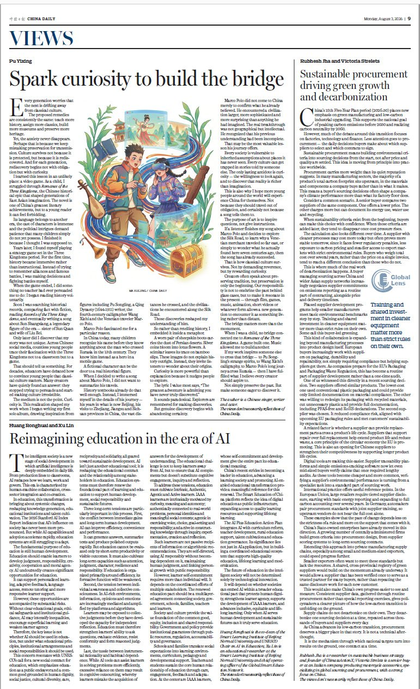

跨界创作者 · 作家 · 歌手 · 演员 · 游戏主播 · 影评人


小时候读《三国》想摔书，后来打游戏却对历史上头了。阿蒲用自己的"真香"经历证明：传统文化走进年轻人心里，缺的不是内涵，是"桥"。他写《蒲松龄》《王羲之》《马可波罗》《孙尚香》，把历史藏进歌词里，不喊口号不讲术语，只撩拨你的好奇心。能让年轻人快乐入坑，才是创作者的硬核 KPI。
"我一直觉得，让年轻人快乐轻松地去了解传统文化，应该是创作者的责任。古典文化不需要被供在神坛上，它需要被重新讲述——用一种年轻人能够接受、愿意靠近的方式。可以是电影，可以是动画，可以是游戏，可以是音乐，可以是短视频，可以是任何一种年轻人乐于接触的内容形式。重要的不是形式本身，而是形式背后的诚意：你是否真正尊重传统文化，是否真正理解年轻人的语言，是否愿意造一座桥，而不是树一座碑。"